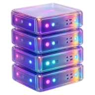
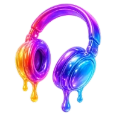

Gerçek Zamanlı Motor
Her oyun masası ve canlı oda, küresel kenar ağında kendi küçük sunucusunda yaşar. Hamleler ve mesajlar milisaniyeler içinde herkese ulaşır; oyuncu koparsa masa onu bekler, döndüğünde kaldığı yerden devam eder.
Ringo, kalabalığın aynı anda konuştuğu, oynadığı ve hediye gönderdiği anlar için tasarlandı. Bu sayfa, platformun nasıl çalıştığını ve nasıl korunduğunu anlatır.
Her katman tek bir işi yapar ve birbirinden bağımsız ölçeklenir. Bir parça yavaşlarsa diğerleri çalışmaya devam eder.
Her oyun masası ve canlı oda, küresel kenar ağında kendi küçük sunucusunda yaşar. Hamleler ve mesajlar milisaniyeler içinde herkese ulaşır; oyuncu koparsa masa onu bekler, döndüğünde kaldığı yerden devam eder.

Sunucusuz fonksiyonlarla çalışır; yük arttıkça kendiliğinden çoğalır. Her uç kendi yetki kontrolünü yapar, istemci veritabanına asla doğrudan erişemez.
Yönetilen PostgreSQL; puan ve hediye hareketleri ayrı defter kayıtlarıyla izlenir, her işlem tekrar gönderime karşı korunur.

Sesli odalar ve PK yayınları WebRTC ile doğrudan akar; zor ağlar için aktarım sunucusu devreye girer. Müzik ve görseller kenar ağındaki medya deposundan sunulur.
Site her 5 dakikada dışarıdan denetlenir, her 10 dakikada içeriden bakım raporu çıkar: veritabanı gecikmesi, takılı masalar, hatalar. Sorun olursa ekip anında e-posta alır.
Masalar ve odalar birbirinden bağımsız çalıştığı için kullanıcı sayısı arttıkça sistem yatay büyür; tek bir yoğun oda diğerlerini yavaşlatmaz.
Güvenlik sonradan eklenmedi; her uç, her tablo ve her sunucu konuşması baştan buna göre kuruldu.
Ringo'da kazanmak beceri ve eğlence işidir. Puan sistemi bahsi ve şans oyunlarını kapı dışında bırakacak şekilde tasarlandı.